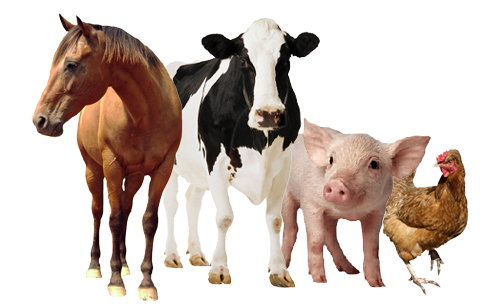

Jerseyský skot pro chovatele by Ewelina Polzer, 1993.
For 50 years, WWF has been protecting the future of nature. The world's leading conservation organization, WWF works in 100 countries and is supported by 1.2 million members in the United States and close to 5 million globally.
Jersejský skot je v ČR velmi vzácný.
This text will go right-to-left.

Chov slepic ve volném výběhu
Slepice pobývají v hale nebo ve výběhu. Tento způsob velkochovu poskytuje nosnicím dostatek možností k projevům jejich přirozeného chování a splňují welfare slepic. Nabízíme komplexní řešení pro chov slepic i jednotlivé prvky systému.